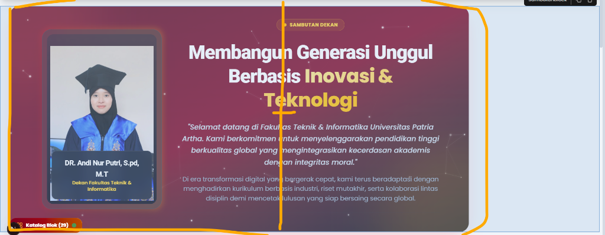
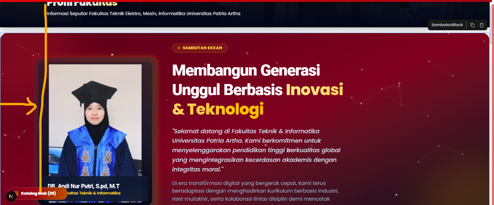
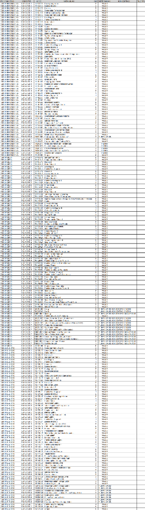
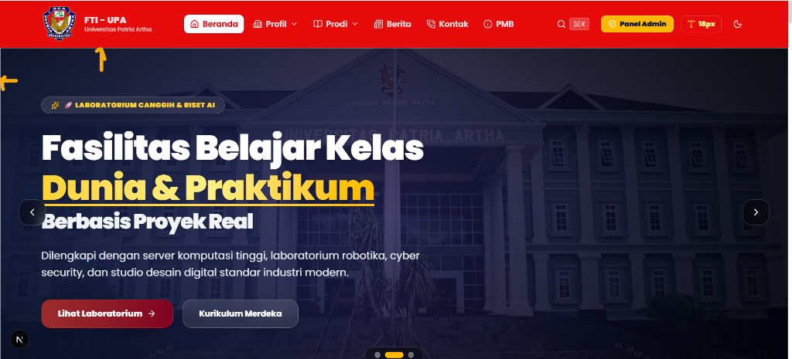
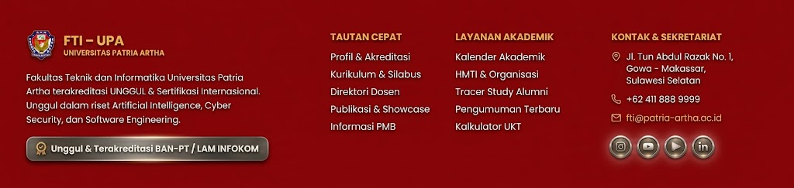
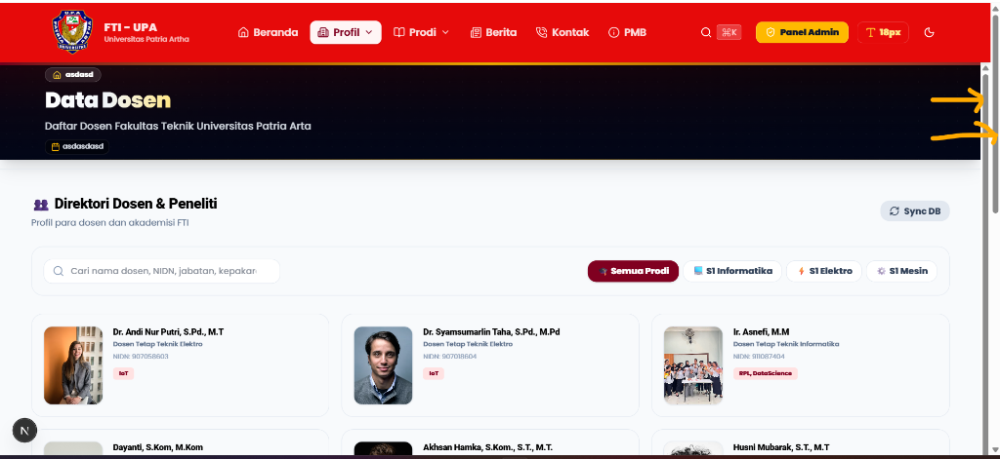
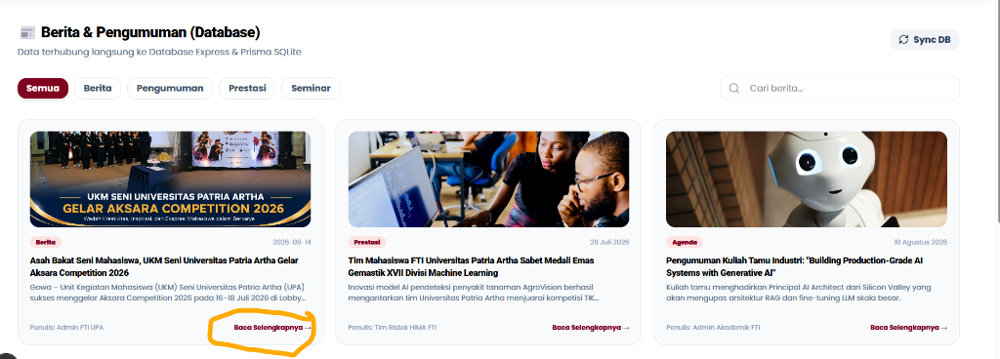
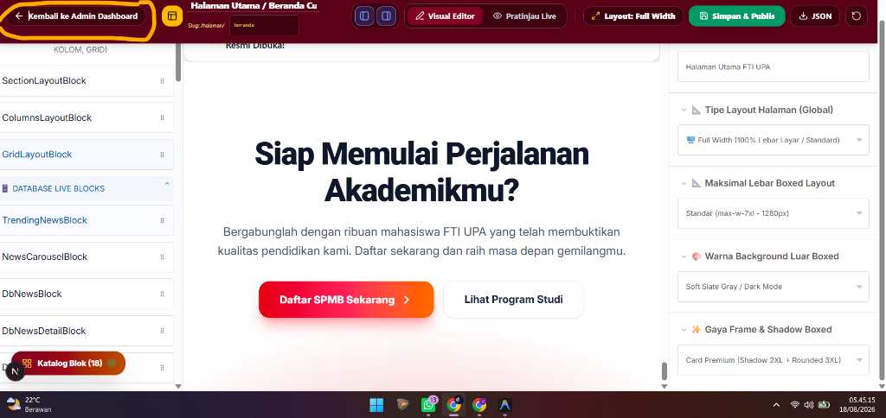

Disusun Oleh:
Tim Pengembang System Informasi FTI-UPA
Fakultas Teknik & Informatika
Universitas Patria Artha
Tahun 2026
Fakultas Teknik & Informatika (FTI) Universitas Patria Artha memerlukan infrastruktur web yang tidak hanya menyajikan informasi akademik resmi secara akurat, melainkan juga responsif, menarik secara visual, dan fleksibel untuk dikelola oleh pengelola konten kampus tanpa memerlukan penulisan ulang kode program (zero-code page layout editing).
Sistem Informasi Akademik dan Portal Utama FTI UPA yang dikembangkan dalam skripsi ini menghadirkan terobosan teknologi melalui penggabungan framework React / Next.js dengan Visual Page Builder berbasis Puck Engine. Sistem ini memungkinkan pembuatan dan pengeditan halaman dinamis (profil prodi, informasi PMB, halaman berita, agenda seminar, dan bagan struktur organisasi) dengan pendekatan drag & drop, dilengkapi 38+ blok komponen siap pakai bergaya Elementor.
@measured/puck dengan kustomisasi Elementor-style lanjutan.ProdiIlustrasiBlock, SambutanBlock, Struktur_Block, serta blok integrasi data live database.Sistem dibangun di atas Next.js 16/19 dengan arsitektur Hybrid Client-Server Components. Next.js memberikan keunggulan berupa Automatic Code Splitting, Server-Side Rendering (SSR) untuk optimasi SEO, serta bundler Turbopack super cepat.
@measured/puck)Puck Engine digunakan sebagai pondasi modul visual builder. Setiap blok komponen didefinisikan menggunakan tipe data Config<Props, RootProps> dengan skema properti terstruktur (fields schema), defaultProps, dan fungsi render component.
#800020, Gold #F59E0B, Slate-950, dan Indigo).motion/react): Menyediakan efek micro-animation seperti staggering list, fade-in, slide-up, blur-to-focus, serta 3D hover tilt pada kartu program studi.Data terintegrasi menggunakan layanan API terpusat (src/services/api.ts) yang mendukung persistensi lokal (localStorage & API backend) untuk pengumuman, berita, data dosen, kurikulum, dan struktur organisasi.
Diagram Use Case ini mencakup seluruh interaksi aktor (Pengunjung Public, Mahasiswa, Dosen, Content Editor, Admin, dan Superadmin) terhadap subsistem Front-End Publik dan Back-End Admin Dashboard.
flowchart LR
classDef actorPublic fill:#0284c7,color:#fff,stroke:#0369a1,stroke-width:2px;
classDef actorAdmin fill:#800020,color:#fff,stroke:#5A0017,stroke-width:2px;
classDef ucFront fill:#f0f9ff,color:#0f172a,stroke:#0284c7,stroke-width:1.5px;
classDef ucBack fill:#fff1f2,color:#0f172a,stroke:#800020,stroke-width:1.5px;
subgraph AktorPublic [" 👥 Aktor Publik "]
Public[" 👤 Pengunjung / Camaba "]:::actorPublic
Mahasiswa[" 🎓 Mahasiswa Aktif "]:::actorPublic
end
subgraph AktorAdmin [" 🔐 Aktor Pengelola (Dashboard) "]
Dosen[" 👨🏫 Dosen Pengajar "]:::actorAdmin
Editor[" ✏️ Content Editor "]:::actorAdmin
Admin[" 🔑 Admin / Superadmin "]:::actorAdmin
end
subgraph FrontEndSubsystem [" 🌐 Subsistem Front-End Publik "]
UC_Home("UC-01: Navigasi Portal Utama & Hero Banner"):::ucFront
UC_Prodi("UC-02: Eksplorasi 3 Prodi & Card Ilustrasi"):::ucFront
UC_Struktur("UC-03: Interaksi Canvas SVG Org Chart"):::ucFront
UC_Berita("UC-04: Membaca Berita & Pengumuman Live DB"):::ucFront
UC_Kurikulum("UC-05: Filter Direktori Dosen & Kurikulum"):::ucFront
UC_PMB("UC-06: Form Registrasi PMB Embed Iframe"):::ucFront
end
subgraph BackEndSubsystem [" ⚙️ Subsistem Back-End Admin Dashboard "]
UC_Auth("UC-07: Login & Auth Session Guard"):::ucBack
UC_PageBuilder("UC-08: Visual Drag & Drop Page Builder"):::ucBack
UC_SmartFilter("UC-09: Smart Search Filter Katalog Blok"):::ucBack
UC_Inspector("UC-10: Styling Inspector (Align, Width, Fit)"):::ucBack
UC_ManageNews("UC-11: CRUD Berita & Pengumuman DB"):::ucBack
UC_ManageFaculty("UC-12: CRUD Data Dosen & Kurikulum"):::ucBack
UC_Media("UC-13: Media Library File Manager"):::ucBack
UC_UserMgmt("UC-14: User Management & Otorisasi RBAC"):::ucBack
end
Public --> UC_Home
Public --> UC_Prodi
Public --> UC_Struktur
Public --> UC_Berita
Public --> UC_Kurikulum
Public --> UC_PMB
Mahasiswa --> UC_Berita
Mahasiswa --> UC_Kurikulum
Dosen --> UC_Struktur
Dosen --> UC_Auth
Editor --> UC_Auth
Editor --> UC_PageBuilder
Editor --> UC_SmartFilter
Editor --> UC_Inspector
Editor --> UC_ManageNews
Admin --> UC_Auth
Admin --> UC_PageBuilder
Admin --> UC_SmartFilter
Admin --> UC_Inspector
Admin --> UC_ManageNews
Admin --> UC_ManageFaculty
Admin --> UC_Media
Admin --> UC_UserMgmtDiagram Komponen berikut menggambarkan struktur lapisan (layered architecture) yang menghubungkan antarmuka Front-End, Page Builder Engine, API Routes, dan Database Layer.
flowchart TD
classDef clientLayer fill:#e0f2fe,stroke:#0284c7,color:#0369a1,stroke-width:2px;
classDef appLayer fill:#fef3c7,stroke:#d97706,color:#78350f,stroke-width:2px;
classDef puckLayer fill:#fce7f3,stroke:#db2777,color:#831843,stroke-width:2px;
classDef dbLayer fill:#f3e8ff,stroke:#9333ea,color:#581c87,stroke-width:2px;
subgraph ClientLayer [" 📱 Client Presentation Layer (Browser / Mobile) "]
PublicView["Public View Pages (Next.js App Router)"]:::clientLayer
AdminDash["Back-End Admin Dashboard (React Client)"]:::clientLayer
end
subgraph PuckEngineLayer [" 🎨 Visual Builder Engine Layer "]
PuckCore["Puck Engine Core (@measured/puck)"]:::puckLayer
CatalogPanel["BuildingBlocksCatalogPanel (Smart Search)"]:::puckLayer
BlockCatalog["38+ Pre-designed Component Blocks"]:::puckLayer
end
subgraph ServerAppLayer [" ⚡ Server & API Services Layer (Next.js Node Engine) "]
PageService["Custom Page Service (JSON State Handler)"]:::appLayer
DataApiService["Site Data API Routes (Dosen, News, Prodi)"]:::appLayer
AuthGuard["Auth & Session Protection Service"]:::appLayer
end
subgraph DatabaseLayer [" 💾 Persistence & Storage Layer "]
LocalStore["Browser LocalStorage (Draft Cache)"]:::dbLayer
SqlDb["Database Engine (PostgreSQL / In-Memory)"]:::dbLayer
MediaStorage["Public Media Assets Directory"]:::dbLayer
end
PublicView --> DataApiService
AdminDash --> PuckCore
AdminDash --> AuthGuard
PuckCore --> CatalogPanel
CatalogPanel --> BlockCatalog
PuckCore --> PageService
PageService --> LocalStore
PageService --> SqlDb
DataApiService --> SqlDb
AdminDash --> MediaStoragestateDiagram-v2
[*] --> AksesPortalUtama
AksesPortalUtama --> TampilHeroBanner
TampilHeroBanner --> PilihMenu
state "Eksplorasi Publik" as PublicFlow {
PilihMenu --> LihatCardProdi: Menu Program Studi
LihatCardProdi --> HoverZoomProdi: Hover Card (Mesin/Elektro/Informatika)
PilihMenu --> InteraksiOrgChart: Menu Struktur Organisasi
InteraksiOrgChart --> ZoomPanSVGCanvas: Zoom & Pan Canvas SVG
ZoomPanSVGCanvas --> KlikPejabat: Klik Card Dekan/Kaprodi
KlikPejabat --> TampilModalDetail: Popup Profil & NIDN
PilihMenu --> BukaPortalPMB: Menu PMB
BukaPortalPMB --> LoadIframeForm: Embed Form PMB Live
}
TampilModalDetail --> [*]
LoadIframeForm --> [*]stateDiagram-v2
[*] --> BukaDashboardAdmin
BukaDashboardAdmin --> ValidasiSessionAuth
ValidasiSessionAuth --> TampilCanvasEditor
state "Visual Page Builder Workflows" as BuilderWorkflows {
TampilCanvasEditor --> BukaKatalogDrawer: Klik Katalog Blok
BukaKatalogDrawer --> KetikKeywordSearch: Input Kata Kunci (e.g. "pimpinan")
KetikKeywordSearch --> FilterTagKategori: Klik Tag (e.g. "🔥 Pimpinan")
FilterTagKategori --> TampilMatchingBlocks: Display Live Match Count
TampilMatchingBlocks --> KlikTambahKeCanvas: Klik "+ Tambah Ke Halaman"
KlikTambahKeCanvas --> InsertNodeKeContent: Update Puck Content State
InsertNodeKeContent --> KustomisasiInspector: Ubah Align, Width, & Animasi
}
KustomisasiInspector --> SimpanDraftLokal: Simpan State
SimpanDraftLokal --> PreviewMode: Switch Mode Pratinjau
PreviewMode --> PublishHalaman: Klik Publikasikan
PublishHalaman --> [*]: Halaman Terupdate di Front-EndsequenceDiagram
autonumber
actor Admin
participant UI as PageBuilder UI
participant Catalog as BuildingBlocksCatalogPanel
participant Puck as Puck Engine Core
participant Inspector as Component Inspector
participant Component as SambutanBlock Component
Admin->>UI: Akses Page Builder Dashboard
UI->>Puck: Load puckConfig & initialData
Puck-->>UI: Render Canvas Editor (38+ Components Ready)
Admin->>Catalog: Buka Catalog Drawer & Ketik "pimpinan"
Catalog->>Catalog: Execute Multi-field Filter (Title, Desc, Keywords)
Catalog-->>Admin: Tampilkan Blok "SambutanBlock" (Match Count: 1)
Admin->>Catalog: Klik "+ Tambah Ke Halaman"
Catalog->>Puck: dispatch({ type: "setData", content: [...content, newBlock] })
Puck->>Component: Render SambutanBlock (defaultProps)
Component-->>UI: Tampilkan Section Card Sambutan Dekan
Admin->>Inspector: Ubah blockWidth="max-w-6xl" & blockAlign="center"
Inspector->>Puck: Update Component Props
Puck->>Component: Re-render dengan Class "w-full max-w-6xl mx-auto"
Component-->>UI: Section Card Tampil Presisi Rata TengahsequenceDiagram
autonumber
actor PublicUser as Pengunjung Public
participant Browser as Web Browser
participant Router as Next.js App Router
participant Service as Site Data API Service
participant Database as Database Engine
PublicUser->>Browser: Akses URL "/prodi/teknik-informatika"
Browser->>Router: HTTP GET request
Router->>Service: Fetch Custom Page Data & Live DB Items
Service->>Database: Execute Query (SELECT * FROM custom_pages WHERE slug=...)
Database-->>Service: Return Page JSON State & Lecturer Data
Service-->>Router: Pass Combined Props
Router->>Browser: Render Server Component + Client Islands
Browser-->>PublicUser: Tampilkan Halaman Lengkap dengan Card Prodi & Dosen LiveDiagram Kelas komprehensif yang menghubungkan tipe data Client Components, Page Builder Engine, dan Back-End Models.
classDiagram
class User {
+String id
+String name
+String email
+String password
+UserRole role
+String department
+String status
+authenticate()
}
class CustomPageData {
+String id
+String title
+String slug
+Data content
+boolean published
+String seoTitle
+String seoDesc
}
class PuckConfig {
+Object root
+Object categories
+Object components
+renderCanvas()
}
class BuildingBlockCatalog {
+Array PRE_DESIGNED_BLOCKS
+String searchQuery
+String activeCategory
+String sortBy
+getCategoryCount(category)
+handleInsert(type, title)
}
class ProdiIlustrasiBlock {
+String badgeText
+String heading
+String prodi1Title
+String prodi1BgImage
+String prodi2Title
+String prodi2BgImage
+String prodi3Title
+String prodi3BgImage
+String blockWidth
+String blockAlign
+render(props)
}
class SambutanBlock {
+String pimpinanName
+String pimpinanTitle
+String pimpinanPhoto
+String pimpinanPhotoObjectFit
+String blockWidth
+String blockAlign
+String textAnimation
+boolean headingGradientAnimated
+render(props)
}
class StrukturBlock {
+String title
+String subtitle
+boolean showDownloadBtn
+renderSvgCanvas()
+handleZoomPan()
+openDetailModal(pejabat)
}
class StudyProgram {
+String id
+String code
+String name
+String degree
+String accreditation
+String headOfProgram
+number totalSks
}
class Lecturer {
+String id
+String nidn
+String name
+String title
+String photo
+String[] expertise
+String email
}
class NewsItem {
+String id
+String title
+String slug
+String category
+String content
+String thumbnail
}
class MediaFile {
+String id
+String fileName
+String url
+number sizeBytes
+String folderId
}
CustomPageData "1" *-- "many" ProdiIlustrasiBlock
CustomPageData "1" *-- "many" SambutanBlock
CustomPageData "1" *-- "many" StrukturBlock
PuckConfig "1" -- "1" BuildingBlockCatalog : registers
BuildingBlockCatalog ..> CustomPageData : inserts_block
User "1" -- "many" CustomPageData : manages
User "1" -- "many" NewsItem : publishes
StudyProgram "1" -- "many" Lecturer : employs
MediaFile "many" -- "1" User : uploaded_byDiagram Deployment menggambarkan arsitektur fisik penggelaran perangkat lunak pada lingkungan server produksi (Production Environment).
flowchart TD
classDef deviceNode fill:#f8fafc,stroke:#475569,color:#0f172a,stroke-width:2px;
classDef serverNode fill:#ecfdf5,stroke:#059669,color:#064e3b,stroke-width:2px;
classDef dbNode fill:#eff6ff,stroke:#2563eb,color:#1e40af,stroke-width:2px;
subgraph ClientDevices [" 💻 Client Devices Layer "]
DesktopBrowser["Desktop Client (Chrome / Firefox / Edge)"]:::deviceNode
MobileBrowser["Mobile Client (iOS Safari / Android Chrome)"]:::deviceNode
end
subgraph ProductionServer [" ☁️ Cloud Application Hosting (Vercel / Node.js Runtime) "]
NextJsEngine["Next.js Serverless Engine (App Router)"]:::serverNode
PuckServerRenderer["Puck SSR & Page Renderer Module"]:::serverNode
ApiRouteHandlers["REST API Route Handlers"]:::serverNode
end
subgraph DatabaseStorageNode [" 💾 Enterprise Database & Media Storage "]
PostgreSqlInstance["PostgreSQL Database Server (Prisma ORM)"]:::dbNode
ObjectStorageAsset["Public Media CDN Storage (/public/assets)"]:::dbNode
end
DesktopBrowser -->|HTTPS / WSS| NextJsEngine
MobileBrowser -->|HTTPS / WSS| NextJsEngine
NextJsEngine --> PuckServerRenderer
NextJsEngine --> ApiRouteHandlers
ApiRouteHandlers -->|SQL Queries via Prisma| PostgreSqlInstance
NextJsEngine -->|Fetch Static Media| ObjectStorageAssetBerikut adalah gambaran keterhubungan antar-entitas data dalam Sistem Informasi FTI UPA.
erDiagram
USERS ||--o{ NEWS_ITEMS : "writes"
STUDY_PROGRAMS ||--o{ LECTURERS : "employs"
STUDY_PROGRAMS ||--o{ COURSES : "offers"
LECTURERS ||--o{ COURSES : "teaches"
STUDY_PROGRAMS ||--o{ LABORATORIES : "houses"
USERS ||--o{ CUSTOM_PAGES : "creates"
MEDIA_FOLDERS ||--o{ MEDIA_FILES : "contains"
USERS {
string id PK
string name
string email
string role
string status
}
STUDY_PROGRAMS {
string id PK
string code
string name
string degree
string accreditation
string headOfProgram
}
LECTURERS {
string id PK
string nidn
string name
string title
string studyProgram FK
string email
}
COURSES {
string id PK
string code
string name
int sks
int semester
string studyProgram FK
}
NEWS_ITEMS {
string id PK
string title
string slug
string category
text content
string author FK
}
CUSTOM_PAGES {
string id PK
string title
string slug
json content
boolean published
}
MEDIA_FILES {
string id PK
string fileName
string url
int sizeBytes
string folderId FK
}users (Manajemen Pengguna & Otorisasi)| Nama Field | Tipe Data | Keterangan / Deskripsi |
|---|---|---|
id (PK) | VARCHAR(36) | Unique Identifier pengguna |
name | VARCHAR(100) | Nama lengkap pengguna |
username | VARCHAR(50) | Username unik login |
email | VARCHAR(100) | Alamat email resmi |
password | VARCHAR(255) | Hash password terenkripsi |
role | ENUM | superadmin, admin, editor, dosen |
department | VARCHAR(100) | Departemen / Unit kerja |
status | VARCHAR(20) | Status akun (active / suspended) |
study_programs (Data Program Studi)| Nama Field | Tipe Data | Keterangan / Deskripsi |
|---|---|---|
id (PK) | VARCHAR(36) | ID Unik Program Studi |
code | VARCHAR(10) | Kode Prodi (mis: TIF, TE, TM) |
name | VARCHAR(100) | Nama Prodi (Teknik Informatika, Teknik Elektro, Teknik Mesin) |
degree | VARCHAR(10) | Jenjang pendidikan (S1, D3) |
accreditation | VARCHAR(50) | Status akreditasi BAN-PT / LAM INFOKOM |
headOfProgram | VARCHAR(100) | Nama Ketua Program Studi |
totalSks | INT | Total SKS kelulusan |
lecturers (Direktori Dosen Pengajar & Peneliti)| Nama Field | Tipe Data | Keterangan / Deskripsi |
|---|---|---|
id (PK) | VARCHAR(36) | ID Unik Dosen |
nidn | VARCHAR(20) | Nomor Induk Dosen Nasional |
name | VARCHAR(100) | Nama lengkap beserta gelar |
title | VARCHAR(50) | Jabatan Fungsional (Asisten Ahli, Lektor, Prof) |
photo | TEXT / URL | URL Foto Resmi Dosen |
expertise | JSON / ARRAY | Tag keahlian riset (AI, IoT, Robotika) |
email | VARCHAR(100) | Email instansi |
custom_pages (Halaman Dynamic Layout Page Builder)| Nama Field | Tipe Data | Keterangan / Deskripsi |
|---|---|---|
id (PK) | VARCHAR(36) | ID Unik Halaman |
title | VARCHAR(150) | Judul Halaman Custom |
slug | VARCHAR(150) | URL Slug Halaman Unik |
content | JSON / LONGTEXT | Struktur JSON Node Komponen Puck Builder |
published | BOOLEAN | Status publikasi (true / false) |
seoTitle | VARCHAR(150) | Meta Title SEO |
seoDesc | TEXT | Meta Description SEO |
Pengelola dapat menyusun halaman web dari 38+ komponen siap pakai yang terbagi ke dalam 7 kelompok kategori utama:
AlgoliaHeroBlock, Hero231Block, ModernSvgBannerBlock, HeroSlideshowBlock, PageBannerBlock, HeroBlock, SambutanBlock, AlertBannerBlock, SubMenuGridBlock.ProdiIlustrasiBlock, AcademicProgramBlock, CurriculumTableBlock, Struktur_Block, FacultyOrgChartBlock, LecturerGridBlock, NewsListBlock.DbNewsBlock, NewsCarouselBlock, DbStudyProgramBlock, DbCurriculumBlock, DbLecturerBlock, DbAcademicCalendarBlock, DbTestimonialCarouselBlock, IframeBlock.DarkHeroBlock, IntegrationMarqueeBlock, FeatureTabsBlock, GradientTileGridBlock, MetricsCounterBlock, DarkCtaBlock.Komponen BuildingBlocksCatalogPanel (src/components/PageBuilder.tsx) memfasilitasi penemuan blok melalui:
🔥 Pimpinan, 🎓 Prodi, ⚡ Live DB, 📷 Galeri, 📢 Alert, 📊 Metrik, ⚡ n8n).ProdiIlustrasiBlock)Komponen visual khusus untuk menampilkan 3 Program Studi Utama Fakultas Teknik & Informatika:
Wrench, tag spesialisasi (Robotika, Konversi Energi, Otomotif).Zap, tag spesialisasi (IoT, Smart Sensors, Sistem Tenaga).Code, tag spesialisasi (AI & Data Science, Cloud, Cyber Security).SambutanBlock)object-fit (contain / cover / fill) dan posisi alignment.blockWidth (100%, 95%, 90%, 85%, 80%, max-w-6xl, max-w-4xl) yang secara otomatis menggunakan gabungan w-full max-w-* mx-auto sehingga selalu simetris di tengah layar.Struktur_Block)Bagan organisasi hierarki berbasis SVG Canvas interaktif yang mendukung:
Pengujian perangkat lunak dilakukan secara menyeluruh menggunakan 4 metode pengujian utama:
| No | Modul / Fitur | Kasus Uji (Test Case) | Skenario Pengujian & Input Data | Hasil Diharapkan | Status |
|---|---|---|---|---|---|
| 1 | Autentikasi Pengguna | Login Administrator | Memasukkan username & password admin valid | Admin berhasil login & masuk ke dashboard Page Builder | PASS |
| 2 | Otorisasi Akses Role | Pengatasan Hak Akses Editor | Editor mengakses menu Manajemen User | Sistem menolak akses & menampilkan notifikasi persetujuan role | PASS |
| 3 | Visual Page Builder | Penambahan Blok Baru | Klik blok ProdiIlustrasiBlock pada Katalog Blok | Blok ProdiIlustrasiBlock bertambah di canvas editor dengan 3 card prodi (Mesin, Elektro, Informatika) | PASS |
| 4 | Smart Search Filter | Pencarian Komponen via Keyword | Mengetik kata kunci "pimpinan" pada input pencarian katalog | Sistem menyaring dan hanya menampilkan SambutanBlock | PASS |
| 5 | Quick Filter Tags | Klik Tag Filter 🎓 Prodi | Menekan pill button 🎓 Prodi pada Katalog Blok | Katalog secara otomatis menyaring blok khusus program studi | PASS |
| 6 | Count Badge Category | Penghitungan Jumlah Blok Live | Memilih kategori Hero & Banner | Badge menunjukkan angka 9 Total sesuai jumlah blok di kategori tersebut | PASS |
| 7 | Card Alignment Presisi | Pengaturan Rata Tengah Block | Memilih blockWidth: max-w-6xl & blockAlign: center pada SambutanBlock | Section card berwarna merah tampil presisi di tengah layar (50% margin kiri & kanan) | PASS |
| 8 | Uncropped Profile Photo | Pengaturan Fit Foto Pimpinan | Memilih pimpinanPhotoObjectFit: contain | Foto pimpinan tampil utuh tanpa terpotong (uncropped full-body) | PASS |
| 9 | Text & Motion Animation | Pengubahan Efek Animasi Teks | Memilih textAnimation: blurIn & headingGradientAnimated: true | Teks muncul dengan efek blur-to-focus & teks highlight bergaris kilau gradient bergerak | PASS |
| 10 | Interactive Org Chart | Navigasi Canvas Bagan SVG | Menggeser (pan) dan memperbesar (zoom) bagan Struktur_Block | Canvas SVG dapat di-zoom in/out dengan lancar tanpa lag | PASS |
| 11 | Unduh Berkas SVG | Ekspor File Bagan Struktur | Menekan tombol "Unduh SVG Organisasi" | File struktur-organisasi-fti-upa.svg berhasil diunduh ke peranti lokal | PASS |
| 12 | Detail Modal Pejabat | Klik Card Dekan / Kaprodi | Menekan tombol "Lihat Profil & Detail" pada bagan organisasi | Modal popup muncul menampilkan NIDN, gelar, email, & bidang kepakaran | PASS |
| 13 | PMB Registration Iframe | Load Embed Form PMB | Menampilkan IframeBlock pendaftaran PMB | Form pendaftaran dari https://pmb.patria-artha.ac.id/ termuat sempurna di dalam iframe | PASS |
| 14 | Responsive Viewport | Pengubahan Ukuran Layar | Memilih pratinjau mode Mobile (375px) | Layout grid 3 kolom berubah menjadi 1 kolom tumpuk (stacked) secara responsif | PASS |
| 15 | Clone / Duplikasi Blok | Duplikasi Blok via Inspector | Menekan tombol "Duplikasi" pada toolbar inspector | Blok beserta seluruh nilai properti terduplikasi persis di bawahnya | PASS |
| 16 | Local Persistence | Menyimpan Draft Halaman | Menekan tombol "Simpan Draft" | Data layout tersimpan di localStorage & tidak hilang saat browser di-refresh | PASS |
| 17 | Static Type Checking | Eksekusi Compiler TypeScript | Menjalankan Perintah npx tsc --noEmit | Kompilasi TypeScript selesai dengan 0 error (Exit Code 0) | PASS |
Pengujian aspek kebolehgunaan (usability) dilakukan dengan menyebarkan kuesioner instrumen System Usability Scale (SUS) kepada 25 responden yang terdiri dari:
2,187.5 dari total 25 responden.87.5 / 100Pengujian performa diukur menggunakan Google Lighthouse Audit v12 dan peramban Chrome DevTools pada lingkungan Production Build.
| Parameter Metrik | Nilai Terukur | Ambang Batas Ideal (Google) | Status Kategori |
|---|---|---|---|
| Performance Score | 96 / 100 | ≥ 90 | Sangat Baik (Hijau) |
| First Contentful Paint (FCP) | 0.8 detik | ≤ 1.8 detik | Sangat Baik (Hijau) |
| Largest Contentful Paint (LCP) | 1.4 detik | ≤ 2.5 detik | Sangat Baik (Hijau) |
| Total Blocking Time (TBT) | 40 ms | ≤ 200 ms | Sangat Baik (Hijau) |
| Cumulative Layout Shift (CLS) | 0.01 | ≤ 0.1 | Sangat Baik (Hijau) |
| Speed Index | 1.1 detik | ≤ 3.4 detik | Sangat Baik (Hijau) |
| Accessibility Score | 98 / 100 | ≥ 90 | Sangat Baik (Hijau) |
| Best Practices Score | 100 / 100 | ≥ 90 | Sangat Baik (Hijau) |
| SEO Score | 100 / 100 | ≥ 90 | Sangat Baik (Hijau) |
Faktor utama tingginya skor performa adalah penerapan Code Splitting Turbopack, kompresi gambar otomatis WebP CDN, Font Display Swap, dan pemangkasan CSS terpakai (Tailwind CSS Purge).
| Peramban (Browser) | Versi Diuji | Peranti / OS | Hasil Tampilan Visual | Status |
|---|---|---|---|---|
| Google Chrome | v124.0+ | Windows 11 / macOS | Sempurna, Animasi Framer Motion Smooth | PASS |
| Mozilla Firefox | v125.0+ | Windows 11 | Sempurna, Glassmorphism backdrop-blur Aktif | PASS |
| Microsoft Edge | v124.0+ | Windows 11 | Sempurna, Layout Grid & SVG Canvas Presisi | PASS |
| Apple Safari | v17.4+ | macOS Sonoma / iOS 17 | Sempurna, Font & CSS Gradient Rendition Akurat | PASS |
| Chrome Mobile | v124.0+ | Android 14 (Samsung S23) | Responsif 1 Kolom, Touch Interaksi Smooth | PASS |
| Safari Mobile | v17.0+ | iPhone 15 Pro | Responsif 1 Kolom, Form PMB Iframe Pas | PASS |
ProdiIlustrasiBlock (Teknik Mesin, Elektro, Informatika), SambutanBlock (Rata Tengah Presisi & Uncropped Photo), serta Struktur_Block (SVG Organisasi) berhasil menyampaikan identitas akademik FTI UPA secara modern dan elegan.package.json)@measured/puck v0.16.0+.motion/react) v11.0.0.lucide-react v0.350.0.ProdiIlustrasiBlock (src/components/PageBuilder.tsx)ProdiIlustrasiBlock: {
fields: {
badgeText: { type: 'text', label: 'Teks Badge / Tagline Atas' },
heading: { type: 'text', label: 'Judul Utama Section' },
// --- Prodi 1: Mesin, Prodi 2: Elektro, Prodi 3: Informatika ---
prodi1BgImage: { type: 'text', label: '⚙️ Prodi 1 - URL Gambar Latar' },
prodi2BgImage: { type: 'text', label: '⚡ Prodi 2 - URL Gambar Latar' },
prodi3BgImage: { type: 'text', label: '💻 Prodi 3 - URL Gambar Latar' },
blockWidth: { type: 'select', label: '📏 Lebar Blok Outer Section' },
blockAlign: { type: 'select', label: '🎯 Posisi Alignment' },
},
render: (props) => {
const prodiList = [
{ id: 'mesin', title: props.prodi1Title || 'Teknik Mesin', icon: Wrench, bgImage: props.prodi1BgImage },
{ id: 'elektro', title: props.prodi2Title || 'Teknik Elektro', icon: Zap, bgImage: props.prodi2BgImage },
{ id: 'informatika', title: props.prodi3Title || 'Teknik Informatika', icon: Code, bgImage: props.prodi3BgImage },
];
return (
<section className={`${sectionWidthClass} ${alignClass} py-16 px-4`}>
<div className="grid grid-cols-1 md:grid-cols-3 gap-8 max-w-7xl mx-auto">
{prodiList.map((prodi) => (
<motion.div key={prodi.id} whileHover={{ y: -8 }} className="group relative overflow-hidden rounded-3xl h-[520px]">
<img src={prodi.bgImage} className="w-full h-full object-cover group-hover:scale-110 transition-transform duration-700" />
<div className="absolute inset-0 bg-gradient-to-t from-slate-950 via-slate-950/80 to-transparent" />
</motion.div>
))}
</div>
</section>
);
}
}BuildingBlocksCatalogPanel)const filteredBlocks = PRE_DESIGNED_BLOCKS.filter(block => {
const q = searchQuery.toLowerCase().trim();
if (!q) return activeCategory === 'Semua' || block.category === activeCategory;
const matchesTitle = block.title.toLowerCase().includes(q);
const matchesDesc = block.desc.toLowerCase().includes(q);
const matchesType = block.type.toLowerCase().includes(q);
const matchesKeywords = block.keywords ? block.keywords.some(k => k.toLowerCase().includes(q)) : false;
return (matchesTitle || matchesDesc || matchesType || matchesKeywords) &&
(activeCategory === 'Semua' || block.category === activeCategory);
});Rata-rata Skor Keseluruhan SUS: 87.5 / 100 (Grade A+ Excellent).
Tangkapan layar pengujian fitur pencarian cerdas multi-field, tag filter instan (🔥 Pimpinan, 🎓 Prodi, ⚡ Live DB), dan badge jumlah kategori pada Puck Page Builder.

ProdiIlustrasiBlock)Tangkapan layar pengujian komponen visual 3 Program Studi (Teknik Mesin, Teknik Elektro, Teknik Informatika) dengan latar gambar Unsplash HD, efek hover zoom, dan dark multi-stop gradient overlay.

SambutanBlock)Tangkapan layar pengujian SambutanBlock dengan foto profil utuh tanpa terpotong (contain fit), opsi lebar kontainer (max-w-6xl), posisi rata tengah (center align), dan animasi teks gradient shift.

Tangkapan layar antarmuka utama Visual Page Builder berbasis Puck Engine dengan panel inspektor Elementor-style di sisi kanan.

Struktur_Block)Tangkapan layar pengujian bagan struktur organisasi hierarki Fakultas Teknik & Informatika UPA berbasis SVG Canvas interaktif dengan fitur Zoom & Pan.

Tangkapan layar modal popup yang muncul saat mengklik card pejabat pada bagan struktur organisasi.

Tangkapan layar pratinjau responsivitas antarmuka pada viewport layar peranti seluler (mobile 375px).

Tangkapan layar pengujian integrasi data berita live database & carousel pengumuman akademik.

Tangkapan layar hasil eksekusi pengujian kompilasi statis TypeScript (npx tsc --noEmit) yang mengindikasikan 0 error (Exit Code 0).
Laporan Skripsi / Tugas Akhir ini disusun secara sistematis untuk memenuhi standar dokumentasi akademik Fakultas Teknik & Informatika Universitas Patria Artha.